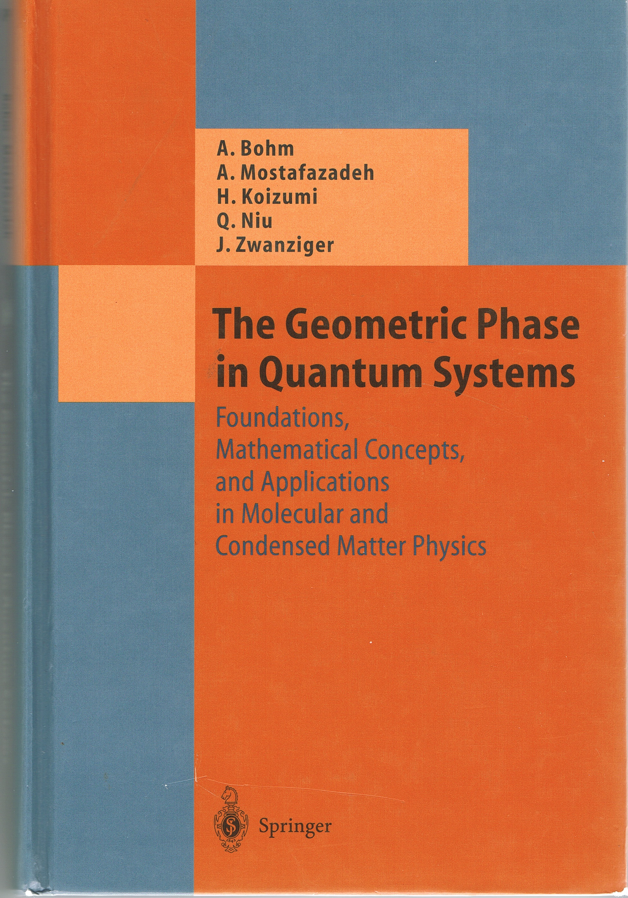
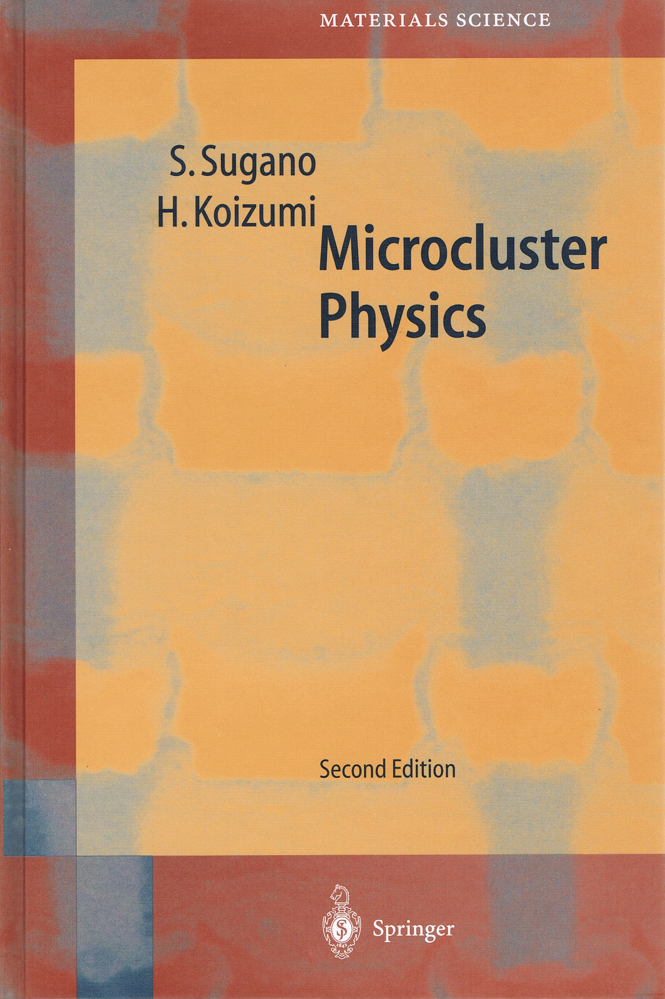

KOIZUMI LAB Homepage
｜
トップ
｜
MEMBERS
｜
RESEARCH
｜
メール (D -> dot, A-> at)
｜
現在の研究テーマ
銅酸化物超伝導を含む新しい超伝導の理論
多体波動関数から生じるベリー位相に基づく、永久電流の生成。 BCS理論を超え、銅酸化物超伝導を説明する新超伝導理論。
超伝導量子ビットの研究
銅酸化物超伝導体や他の超伝導体とナノストラクチャーを組み合わせた 量子ビットに関する理論研
強相関物理系としての自然言語の研究
自然言語の量子情報処理。自然言語（または、ロゴス）とは何かに関する究極の問いに関する研究。
■PUBLICATIONS
著書
A. Bohm, A. Mostafazadeh, H. Koizumi, Q. Niu, J. Zwanziger: "The Geometric Phase in Quantum Systems", (Springer-Verlag, 2003).

S. Sugano and H. Koizumi: "Microcluster Physics", 2nd ed. (Springer-Verlag, 1998).
